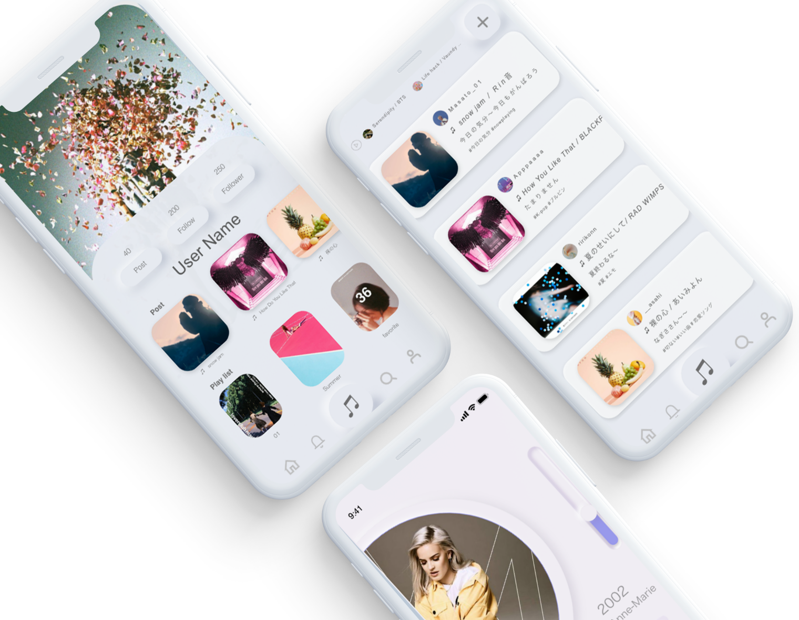
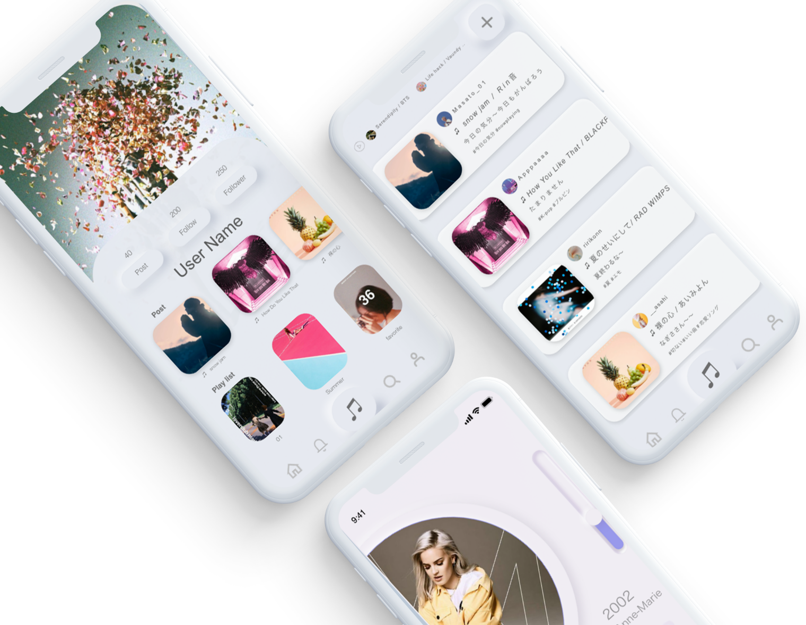

WORKS

Music×SNSアプリ
2週間
AdobeXD,photoshop（企画、デザイン）
制作意図
新型コロナウイルスの影響で人との繋がりやコミュニケーションの場が減少した今だからこそ、オンライン上での繋がりを強め、世の中の人たちが新しい何かに気づき一人一人の心が少しでも安らぐ様なものがあると良いと思ったことがきっかけで制作しました。
2週間
AdobeXD,photoshop（企画、デザイン）
新型コロナウイルスの影響で人との繋がりやコミュニケーションの場が減少した今だからこそ、オンライン上での繋がりを強め、世の中の人たちが新しい何かに気づき一人一人の心が少しでも安らぐ様なものがあると良いと思ったことがきっかけで制作しました。
好きな音楽を共有したい。友人が聞いている曲を知りたい。最近聞く曲がなくて困っている。そんな人々の思いからSNS特化型の音楽アプリを考えてみました。
通常の音楽アプリの様に音楽を聴くことはもちろん、音楽を共有することをメインとした様々なコンテンツを通して、人との繋がりや新しい世界の発見を手助けする。そんなアプリとなっています。

Q.現在使用している 音楽アプリはなんですか
同年代の学生約90名にアンケートを とったところ、73.8%がApple musicを利用 していることがわかりました。
Q.アプリの使用頻度はどのくらいですか
Q.アプリの使い心地はどうですか
Apple music利用者は他のアプリ利用者よりアプリの使用頻度が高く、使い心地にも満足している人が多いという結果が出ました。
Q.アプリで使いづらい点、不満はありますか
などといったものが挙げられました
| Apple music | Spotify | LINE Music | Amazon music Unlimited |
|
|---|---|---|---|---|
| 曲数 | 6000万曲 | 5000万曲 | 6000万曲 | 6500万曲 |
| 特化ジャンル | 洋楽、邦楽 | 洋楽 | 邦楽 | 洋楽 |
| 他のコンテンツとの連携 | 他のアップル製品との連携 | ・Alexa ・豊富なプレイリスト |
・LINE (BGM設定、シェア) ・android限定プラン |
・Alexa、
Amazonecho ・Amazon Prime会員 |
| 強み | ・iPhoneと
相性が良い ・デザイン, 操作性 ・FOR YOU |
・無料プラン（シャッフル再生のみ） | ・LINEとの連携 ・無料プラン |
・Prime会員特典 ・登録曲数 |
基本的なサービス内容にはほとんど差がないからこそ、強みとなる様な新たな機能があると、音楽アプリというところの差別化が図れるのではないかと感じました。
またリアルタイム的なコンテンツが少なく、個で音楽を楽しむことに特化された機能が多いように思いました。（自分の好みに合ったものを提供してくれるなど）

アプリ使用の例として
→プレイリスト作成→音楽を聴く→共有する
といった流れを想定しました。
自由時間が多く音楽が好きな大学生は特に頻繁に音楽を聴くので曲に飽きるスパンも短くなりがちで、常に新しい音楽を探している人も少なくありません。
それと同時に曲を探したりプレイリストを作成するのは面倒といった声もあったことから、この過程で不満や課題が生まれやすいのではないかと考え、ここでの不満解消をメインとして製品を作ることがユーザーの満足度や、新しい音楽に出会うことに繋がると考えました。
競合リサーチを経て、それぞれのミュージックアプリが基本的に個人の機能に特化しているという感覚がありました。しかしその一方で、ユーザーアンケートから友達と音楽を共有したい、新しい音楽を知りたいといった声が多数見受けられました。
このことから本当にユーザーが求めているのは、 音楽を通した人との繋がりではないかと感じました。
人が音楽を共有したいと思う理由の一つに、音楽を通して自分の好みやセンスを知ってもらいたい、共感を得たいというのが挙げられると思います。つまり音楽を共有することはその人のことをより深く知る、繋がるための手段にもなり得ます。
この様に自分の「好き」を共有すること、それによって共感を生むことが新しい繋がりを作り人々の欲求を満たすと共に、新しい世界との出会いにも繋がる。 この様にして広がっていく繋がりが、コロナで人との繋がりが薄れてしまった人や、暗い気持ちから抜け出せない人の心の癒しになってほしい。調査を経てそんなものを作りたいと思い、以下のものを考えました。
繋がる、広がる
自分の「好き」を発信し、リアルタイムで人と繋がる、感情を共有する
検索機能、プレイリストなどの充実によってより便利に快適に、ライフスタイルへの定着
音楽を通した人との繋がりによって、今まで出会うことのなかった新しい曲と出会う機会が増える

 

アカウントで繋がることで友人のおすすめの曲や プレイリスト、また趣味が合う人と出会える
アカウント制のため、他のアプリを挟まずに共有出来る
検索機能を充実させることでより簡単に 聞きたい曲に出会う事が出来る
プレイリストにすぐに曲を追加できるように ボタンを再生画面に表示すること、プレイリストの共有、 検索機能によって、手間を省く